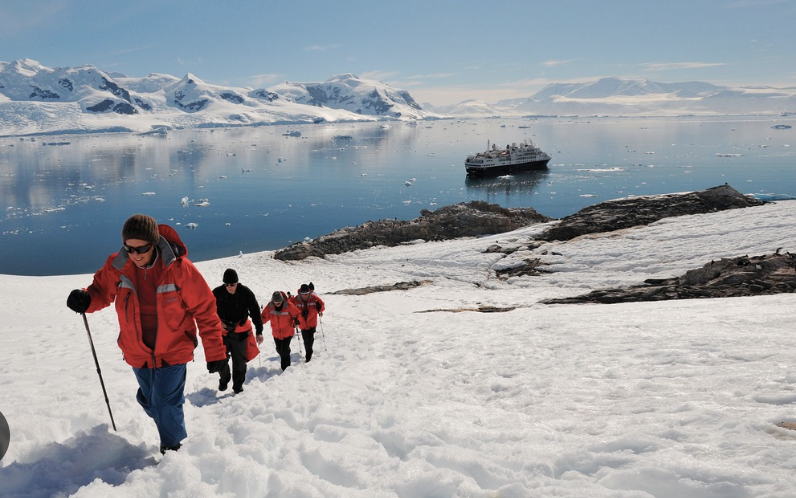

Personal Information
Hello, I'm Prof. Vlad-Teodor Frunzescu. I have a strong passion for Computer Science and Mathematics. In addition to my academic interests, I also enjoy holidays and spending quality time with friends and family.
I love the serene beauty of the beach and the thrill of hiking in the mountains. It's these diverse interests that make life truly enjoyable and fulfilling.
Hobbies
- Playing the guitar is my creative outlet, where melodies and chords come together to bring joy and harmony to my life.
- The world of paintings captivates me with its diverse colors and expressions, and I enjoy creating and admiring art in various forms.
- Sipping on a cup of freshly brewed coffee is my daily ritual, providing both comfort and inspiration to start the day.
- Hiking allows me to connect with nature, explore new trails, and find peace amidst the beauty of the great outdoors.
Photo Gallery
